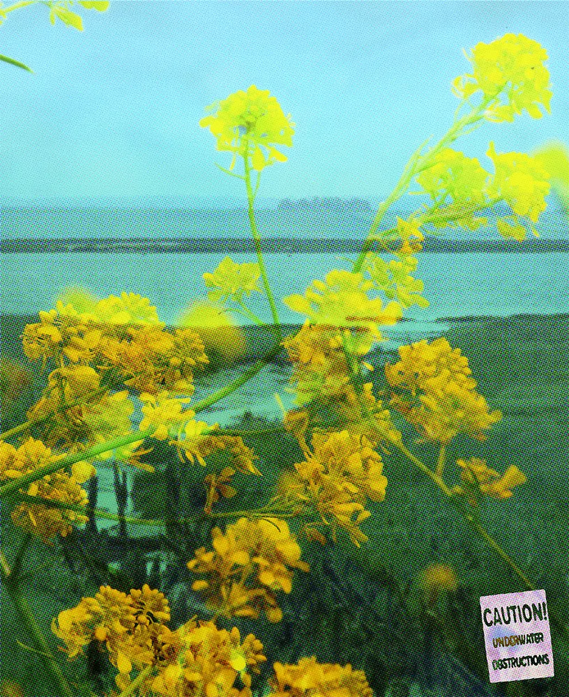
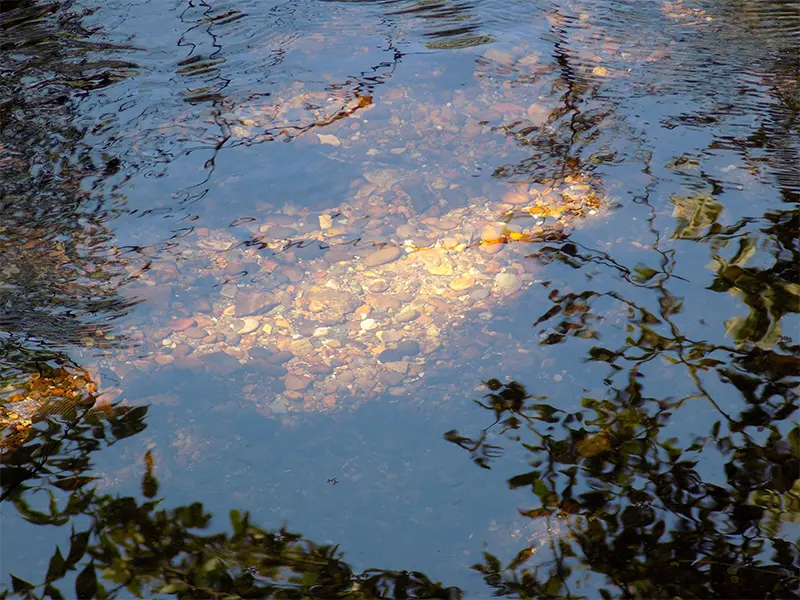
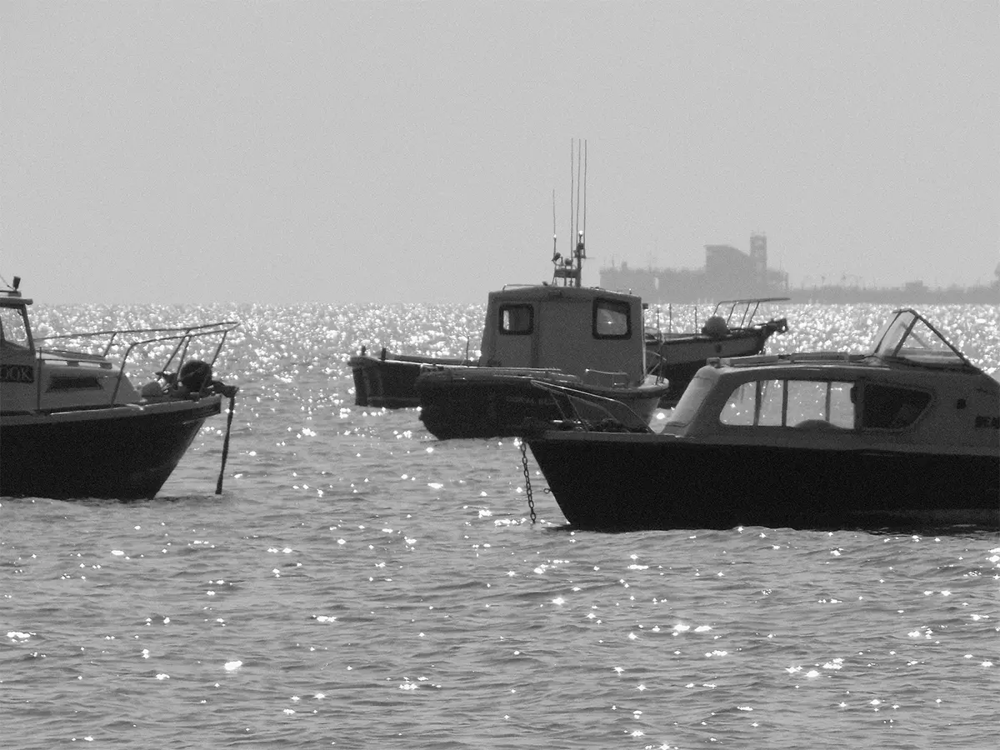

I am a UK-based creative who aims to specialise in and around the worlds of type design and advertising- and always with a passion for spreading joy, be it through a page, through copy that brightens your day or through direction of an engaging multimedia project; I don’t discriminate!
Experimentation is vital, drawing on my natural resourcefulness and engaging with different perspectives to bring new angles and new life to ideas. Innovative concepts are my jam! I am always looking to be original, and no two works of mine are ever the same. I am always looking to better myself and my skills, currently indulging in mixed media techniques like personal collage and photography, and I am a typography nerd. Natural and playful copy is what I do; a harmony of powerful words and images is the balance I try to find. I love to celebrate the inner child through my creative pursuits and bring out innate joy and empathy in all of us.
Contact me here: clararobson04@gmail.com
Here's some pics I took of my lovely hometown, now city, of Southend!
  